Product Strategy · User Research · Behavioral Design · AI-Assisted Development · Team Leadership
Hi, I'm Fahim.
I build B2B products that balance user needs with strategic impact.
Software Engineering & Information Systems student at the University of Oulu, Finland, focused on
product strategy, user research, and building scalable products.
I lead a 30+ member cross-functional team at AIESEC Oulu, co-founded an NGO for digital literacy and
civic engagement, and shipped a live, bilingual product built end-to-end in structured
collaboration with AI — from architecture to production deployment. I'm currently seeking
Product Management & User Research/Product Strategy
roles (Finland/EU/Remote).
Software Engineering and Information Systems student at the University of Oulu with a focus on
product strategy, user research, and building scalable products.
I apply user research, usability testing, heuristic evaluation, and WCAG 2.1 AA principles to health-tech,
public-transit, and productivity products, and I've shipped a live, bilingual product
built end-to-end in structured collaboration with an AI development partner — leading a 30+ member
cross-functional team at AIESEC Oulu and co-founding an NGO supporting digital literacy and international
initiatives. Skilled in Agile Scrum, Kanban, requirements engineering, stakeholder management,
AI-assisted product development, and product-oriented problem solving.
"I want the users to pursue their own goals, rather than being persuaded by the system."
01
Product Strategy & User Research
I translate user research into product decisions — prioritizing features, evaluating trade-offs, and shipping real, working products in structured collaboration with AI. Recent work: Trivial Lezíria Europeia 2.0, a live bilingual product built with Claude as a development partner from architecture to deployment; ComDiaBeat; the OSL app redesign; a Gmail interface redesign; the Internship Placement Portal; and Ruokakauppa, a price-transparent product comparison platform for the Finnish market.
02
Research Methods & System Design
Mixed methods across user personas, usability testing, persuasive design patterns, use-case modeling, ER/UML diagrams, and CRUD analysis. Delivered through Agile Scrum, Kanban, and OCTAVE Allegro risk assessment — with GDPR compliance and ethical design built into every phase.
03
Project Management & Leadership
As Project Manager & Internship Supervisor at AIESEC Oulu, I lead a cross-functional team of 30+ across recruitment, training, and international partnerships, supervise OAMK interns through professional placements, and coordinated a developer-team website redesign that delivered WCAG 2.1 AA accessibility compliance via Agile Scrum and Jira.
04
Impact-Driven Product & Community
Through European Solidarity Corps work in Poland and Portugal, I ran community-needs research, shaped program strategy, and delivered real tools with measurable impact — including Trivial Lezíria Europeia 2.0, a production platform built for an Erasmus+-funded civic education program. I've since co-founded Civic North ry, an NGO focused on digital literacy, AI literacy, youth participation, and civic engagement across Europe.
Currently exploring
How digital interfaces embed political & cultural values
Health technology design and behavior-change support systems
Accessible design for public services and digital inclusion
Ethical persuasive technology and user agency in algorithmic systems
A bilingual, browser-based quiz-race game teaching Portuguese high school students how the European Parliament works — built with real MEPs, real EU laws, and real regional context, entirely in a single self-contained HTML file.
AI-Assisted Product Development · Sole Developer · Associação Mentalidade X — Erasmus+ KA154 (Jul 2024 – Jun 2026)
Part of Lezíria Europeia 2.0, an Erasmus+ KA154 project run by Associação Mentalidade X in partnership with
Golegã Municipal Council and the Golegã, Azinhaga and Pombalinho School Group. Teams race a pawn along a
board from Santarém to the European Parliament, answering real questions across five categories,
negotiating "trilogue" alliances, and finishing with either a plenary vote or a structured "Creating a
Proposal" exercise that mirrors how the EU actually legislates: analyse → position → negotiate → vote.
Why it's interesting, technically
Content — 250 fact-checked, sourced questions across 5 categories, every one hand-translated into Portuguese, not machine-translated filler.
Auth — Firebase Authentication (email/password + Google OAuth) with re-authentication for sensitive actions, GDPR-conscious by design — no student data collected, GM accounts only.
i18n — a from-scratch bilingual system, no library, switching every string live between English and Portuguese mid-question.
Game engine — a full board-game state machine: turn order, dice bounce mechanics, five question categories, event cards, a trilogue negotiation mini-game, a roll-call voting tool modeled on real EU plenary votes, and a four-stage proposal capstone.
Persistence — localStorage only, zero backend beyond Firebase Auth, deliberately zero-infrastructure so a volunteer team can maintain it long-term.
Deployment — hosted on the organisation's own domain with a custom Firebase-authorized domain, independent of any third-party platform.
index.html — entire application
(UI, game engine, i18n, auth, embedded assets)
questions.json — content database (source of truth)
Running locally
python3 -m http.server 8000
Then open http://localhost:8000 — Firebase Auth requires http:///https://, so opening the file directly via file:// won't work.
Every question carries a source URL and, for the hardest tier, a "did you know" fact, so the deck doubles
as a self-checking reference. Content updates only require editing questions.json — the game
code never needs to change to refresh the question bank for a new EU parliamentary term.
Development approach
Built as a deliberate exercise in AI-assisted product development: every stage — technical architecture
decisions, feature implementation, EU/legal content research and fact-checking, bilingual translation,
debugging live issues, and even the non-technical deployment (DNS, hosting purchase, Firebase
configuration) — was done in direct collaboration with Claude (Anthropic) as a development partner, not
as a one-off code generator.
In practice: proposing a feature or fix in plain language, reviewing and directing the implementation,
catching and correcting real bugs together (including a subtle variable-shadowing issue that silently
broke the team-naming UI), verifying factual content against primary sources before it shipped, and
iterating through genuine production troubleshooting — Firebase domain authorization errors, DNS
propagation, file-manager navigation on an unfamiliar hosting panel — step by step, until the game was
live on the organisation's own domain.
The result: a working piece of evidence for how far an AI-assisted workflow can carry a real project —
from a first prototype to a deployed, authenticated, bilingual, 250-question production application,
maintained by a non-developer team.
UX Researcher, Product Strategist & Industrial Design Lead · Solo · Individual project, Product Development course, Univ. of Oulu
A four-part product-research and redesign effort on the Polar Loop / Polar Flow ecosystem, grounded in a self-scraped, self-mined dataset of 18,961 Google Play reviews across 52 languages (2021–2026), sentiment-scored and issue-tagged: an IA and persuasive-design overhaul of the Polar Flow app (navigation, onboarding, in-session tracking, an AI post-session coach), a Gen 2.0 physical redesign fixing the wristband's two-point comfort failure with dimensioned, CAD-ready concept mechanisms, and a critical PSD/BCSS evaluation of a screenless Gen 3.0 concept — including calling out its "engagement moat" framing as a persuasive-design red flag rather than accepting it at face value.
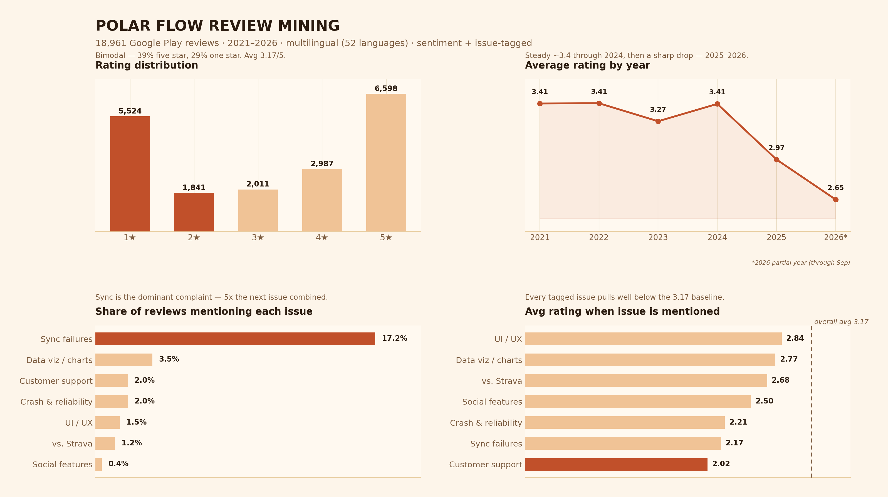
Review data self-collected via the Google Play Store and mined with a Python/pandas pipeline (VADER sentiment scoring, keyword-based issue tagging) — the sync-failure finding (17.2% of all reviews, avg rating 2.17/5 when mentioned) is the empirical evidence behind the app redesign's "stop being dumb middleware" recommendation.
A recorded walkthrough of the redesigned Today dashboard — resting HR, daily goal, steps/distance/active time/calories, and an events feed surfacing sleep, HR peaks, and inactivity alerts in one place, replacing the "dumb middleware" navigation the review-mining flagged.
Information ArchitecturePSD ModelBCSSFigmaIndustrial DesignData AnalysisPython / Pandas
Health Tech · Servitization Strategy · AI/ML RoadmapIn progress
Topcon Healthcare — Ecosystem & AI Servitization Strategy
Software & AI Strategy Lead · Team project, Product Development course, Univ. of Oulu · Guest-lecturer brief, Topcon Healthcare
A servitization and AI-ecosystem proposal for Topcon's ophthalmic device portfolio (Maestro2, NW500, Harmony), built around a real challenge posed by Topcon Healthcare: move beyond one-off hardware sales toward accessible, AI-augmented services for underserved markets and new clinical segments. Led the software/AI strategy: a three-tier regulatory roadmap (synthesis → assistive triage → autonomous diagnosis), diagrammed as a clean left-to-right progression and grounded in the IMDRF SaMD risk framework and the FDA's IDx-DR/LumineticsCore precedent; a HaaS/pay-per-scan business model to replace upfront capital cost; a system architecture diagram built to real infrastructure-documentation conventions — a point-of-care client lane, an on-device edge layer, a Harmony cloud services lane with the operator console and specialist portal modeled as their own services, a data-store lane, and external integrations (payment/clearinghouse, third-party AI partners) routed with dotted lines to separate them from the core data flow; and a zero-training staff workstation & specialist referral portal UX — deliberately scoped so AI surfaces findings for specialist interpretation rather than issuing autonomous diagnoses, matching each service tier to its real regulatory burden.
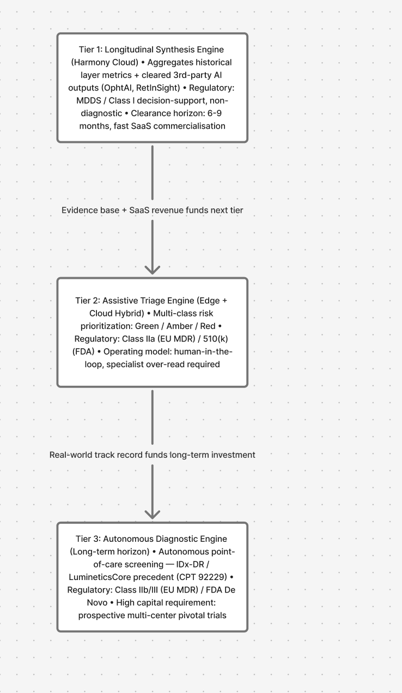
Left: the system architecture, drawn to standard infrastructure-diagram conventions (client / edge / cloud-services / data-store lanes, dotted external integrations). Right: the three-tier regulatory roadmap each service tier is scoped against.
A recorded walkthrough of the Universal Intake screen in the workstation Figma prototype — patient ID/health-card scan, diabetes and sudden-vision-loss triage questions, with a hard branch straight to Urgent Escalation if vision loss in the last 48h is flagged, before any scan is even taken.
Comparative Analysis · Business Intelligence · Market StrategyCompleted
Regional App Behaviour — USA vs EU Comparative Analysis
Data Analyst · Solo · Data Analytics and Business Intelligence course, Univ. of Oulu
A comparative analysis of 1,750 Mobile App User Survey responses (Lim, 2014) investigating whether USA (n=324) and EU (n=1,426) users select and abandon apps differently — testing the business case that region-specific acquisition and retention strategies could outperform a one-size-fits-all approach. Built a fully formula-driven Google Sheets pipeline using COUNTIFS to compute per-region percentages across two multi-response questions (12 app-selection criteria, 14 abandonment reasons) from binary-coded raw data, flagging any gap exceeding 5 percentage points as a key finding — the entire workbook recalculates live from the raw data, so every figure is reproducible and auditable. The standout result: USA users are markedly more likely to switch after finding a better alternative (36.4% vs 21.5%, +14.9pp) and to abandon apps over ads (50.0% vs 42.2%, +7.8pp), while EU users lean more on official app descriptions (43.5% vs 38.3%) — evidence that US strategy should prioritize continuous differentiation and ad-free tiers, while EU strategy can lean harder into acquisition over retention.
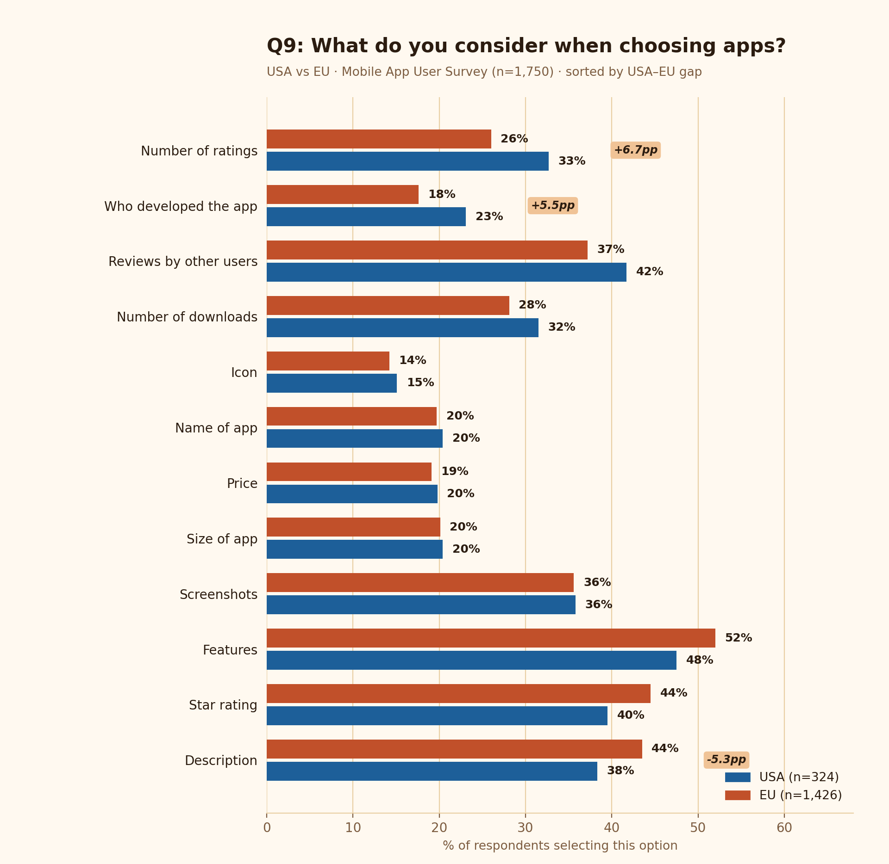
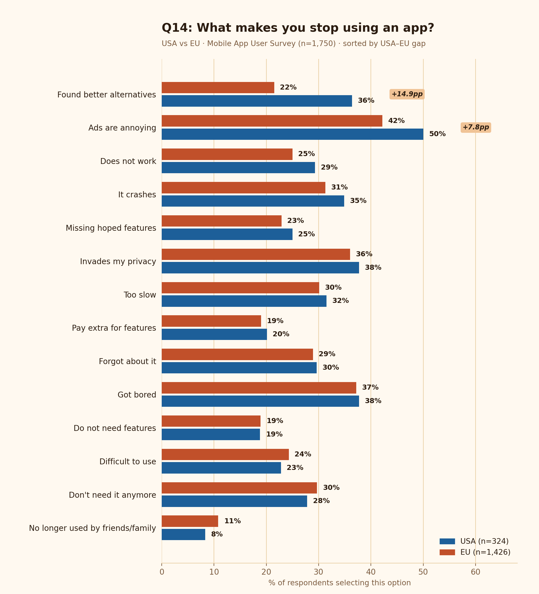
Both charts keep the original analysis's deliberate design choices: blue for USA, orange for EU throughout, sorted by USA–EU percentage-point gap, with only differences exceeding the 5pp significance threshold called out. Every percentage is a live COUNTIFS formula over binary-coded survey responses (n=1,750) — the source workbook recalculates automatically if the raw data changes.
AIESEC Oulu & Erasmus+ — Student Programmes and Cross-Organisation Events
Local President & Project Manager, AIESEC Oulu ry · Erasmus+ Project Advisor, Europeers Finland / EDUFI · Oulu, Finland (Nov 2024–Present)
Lead a cross-functional team of 30+ at AIESEC Oulu, supervising OAMK students through mandatory internship placements while planning and delivering recurring events with external partners: Beyond Borders (with Europeers Finland), Beyond Borders 2.0 (with Business Corner OAMK), two AIESEC Induction events (Spring/Fall), and the Volunteer Work Opportunity Fair (with International House Oulu). In parallel, work as an advisor for the Finnish National Agency for Education (EDUFI) on Erasmus+ project development across the K153, K154, and K210 project types, helping partner NGOs design and structure EU-funded youth and education projects.
UX Manager, UX/UI Designer & Researcher · Solo · Persuasive Systems Design + UX Design & Management, Univ. of Oulu
A community-supported diabetes management app that shifts users from inconsistent pen-and-paper glucose logging (1–2×/day) to consistent digital monitoring (2–8×/day). Built on a four-layer framework — Behavior Change Support Systems, 18 Persuasive System Design principles, Information Architecture, and an iterative design process — across three pillars: self-monitoring with AI pattern detection, context-aware dialogue support, and opt-in community engagement (peer matching, local exercise groups). Refined the target user to adults 45–70 with Type 2 diabetes after interviews surfaced this group as experiencing the highest diabetes burnout, then validated the prototype through think-aloud usability testing and NASA-TLX cognitive load assessment.
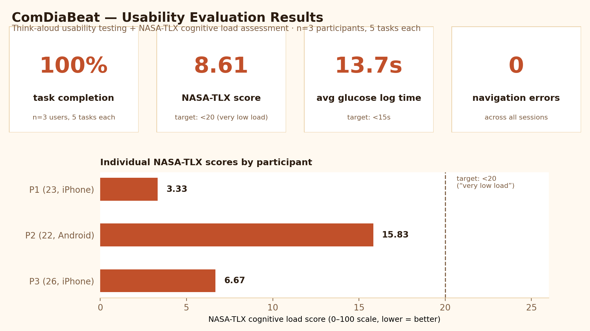
The most interesting finding wasn't the headline number — it's the contrast between very low NASA-TLX (low cognitive load during use) and only partial agreement in open card sorting (mental models didn't fully match before use). That combination means the design teaches itself once someone starts using it, but onboarding needs to bridge first-use expectations.
A recorded walkthrough of the lock-screen notification prototype — the Dialogue Support reminder ("Hey, did you forget to check your glucose after lunch?") alongside a Social Support community event notification, the two persuasive-design pillars working side by side on the same screen.
Persuasive Systems DesignBCSSNASA-TLXCard SortingUsability TestingFigma
UX/UI Designer & Researcher · Solo · Human-Centered Design, Univ. of Oulu
An independent evaluation and redesign of Oulu's public transport app (OSL), triggered by friction I hit as a daily rider: a landing page that defaults to "Purchases" instead of Home, a 6–7 step ticket flow taking 30+ seconds, and no accommodation for WCAG 2.1 AA accessibility. I mapped a canonical trip-planning task through Norman's seven-stage interaction cycle to pinpoint exactly where the app breaks down, then redesigned the information architecture (5 tabs → 3, "Buy" and "Purchases" merged into one "Tickets" section), added voice input and a credit/balance system, and tested the mid-fidelity Figma prototype with 5 real users spanning age, tech skill, and disability status.
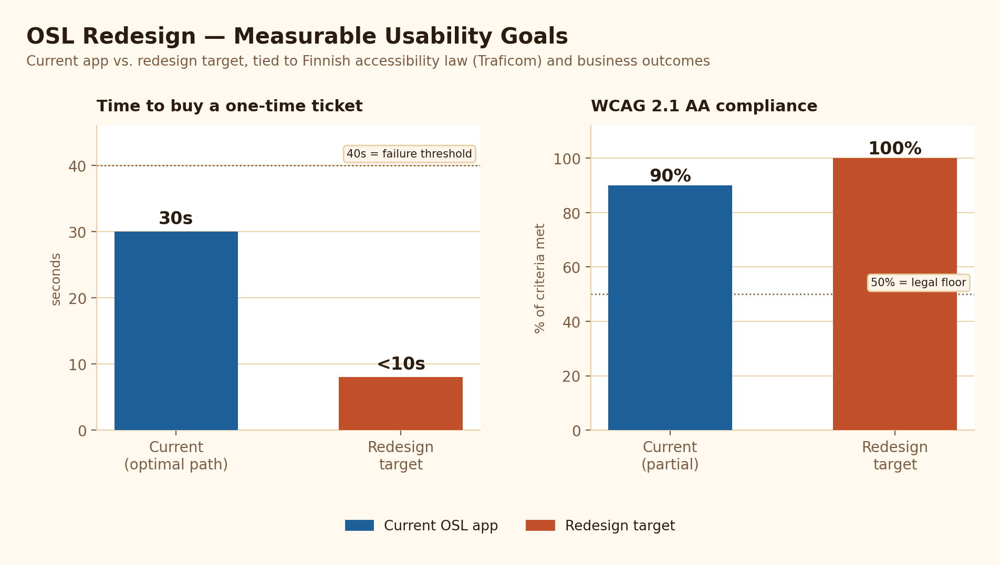
4 of 5 test participants said they'd adopt the redesign outright. The one neutral response — from the oldest participant — became the direct source for a Phase 2 focus: onboarding support for users 50+, alongside an explicit roadmap for groups the Phase 1 redesign still doesn't fully serve (color-blind users, screen-reader users, non-Finnish speakers).
Prototyping Lead · Team of 3 · Human-Centered Design, Univ. of Oulu
A human-centered redesign of Gmail Desktop targeting five critical usability gaps affecting 1.8 billion daily users. A Nielsen heuristic evaluation with 4 evaluators traced three of the five problems to the same root cause — critical actions lack a confirmation layer — which shaped the winning concept: an integrated hybrid combining error prevention, efficiency, and customization (chosen over two narrower drafts that each solved only part of the problem). As prototyping lead, I built the low-fidelity paper prototype and ran think-aloud usability testing with task-based scenarios across three roles — moderator, processor, observer — catching real friction before a single pixel was designed in Figma.
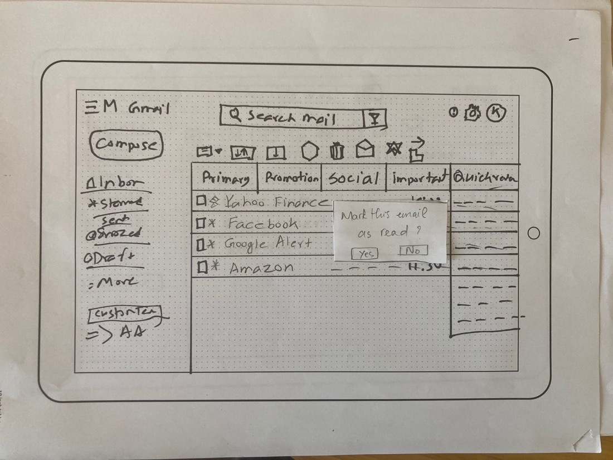
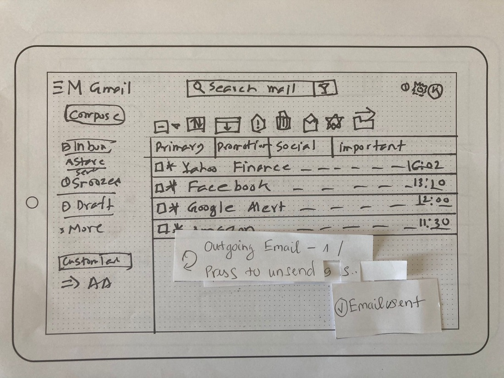
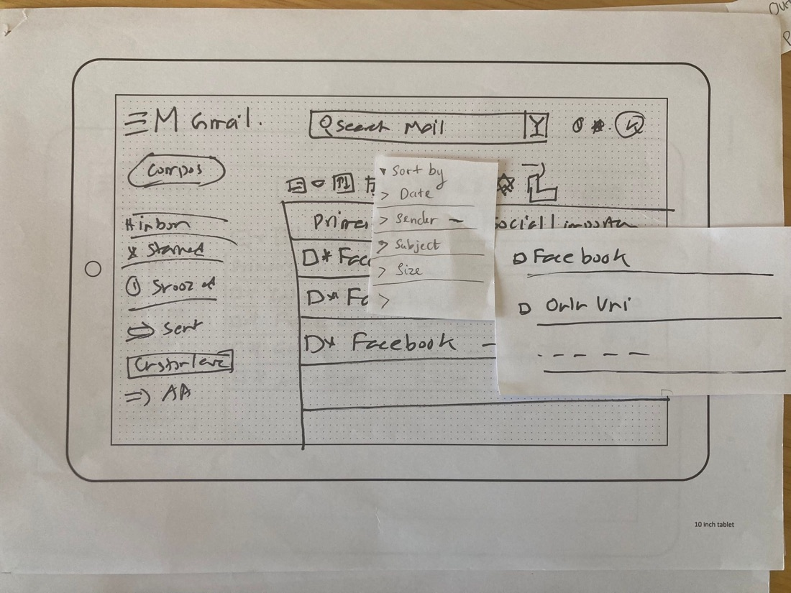
Real paper-prototype test photos — movable sticky notes simulated dynamic UI states (modals, countdowns, dropdowns) for think-aloud testing before any of it existed in Figma. User testing directly reshaped the design twice: the unsend countdown got higher contrast and a larger timer after testers nearly missed it, and sort-dropdown labels were expanded (e.g. "Sort by Sender (A→Z)") after the terse originals confused testers.
76% faster email scanning
95% unsend success rate
Paper PrototypingContextual InquiryStakeholder AnalysisHeuristic Evaluation
System DesignCompleted
Internship Placement Portal (IPP)
Report Author & System Designer · Solo · System Design (812360A-3011), Univ. of Oulu
A stakeholder-driven system design for a platform connecting students, companies, and university placement offices — replacing a scattered process (opportunities spread across multiple sites, no visibility for universities into placement outcomes) with one system three groups actually use: students search, apply in one click, and track applications; companies post roles, review candidates, and verify their account before publishing; the placement office and IT department oversee the whole pipeline. Specified each use case to implementation depth — preconditions, postconditions, priority, frequency of use, normal course of events, alternative courses, and exception handling — rather than stopping at a high-level flow. "Apply for Opportunity," for example, defines what happens when no results match a search (the system suggests loosening criteria or recommends opportunities from the student's profile) and what happens on a technical failure mid-submission; "Post Opportunity" specifies that unverified companies are blocked from publishing and that incomplete drafts can be saved rather than lost. Delivered through Agile Scrum with GDPR-compliant data handling built into the requirements from the start, not bolted on after.
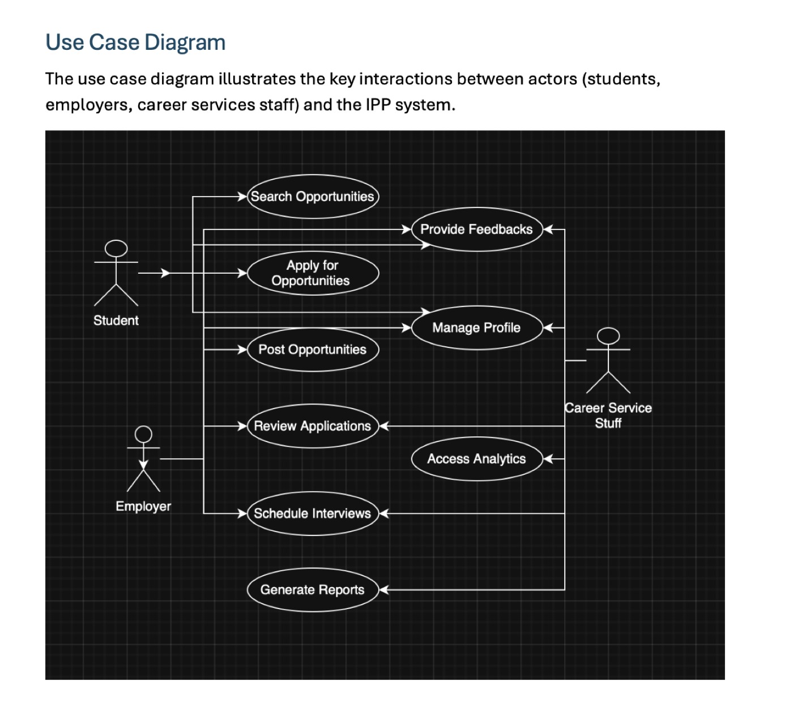
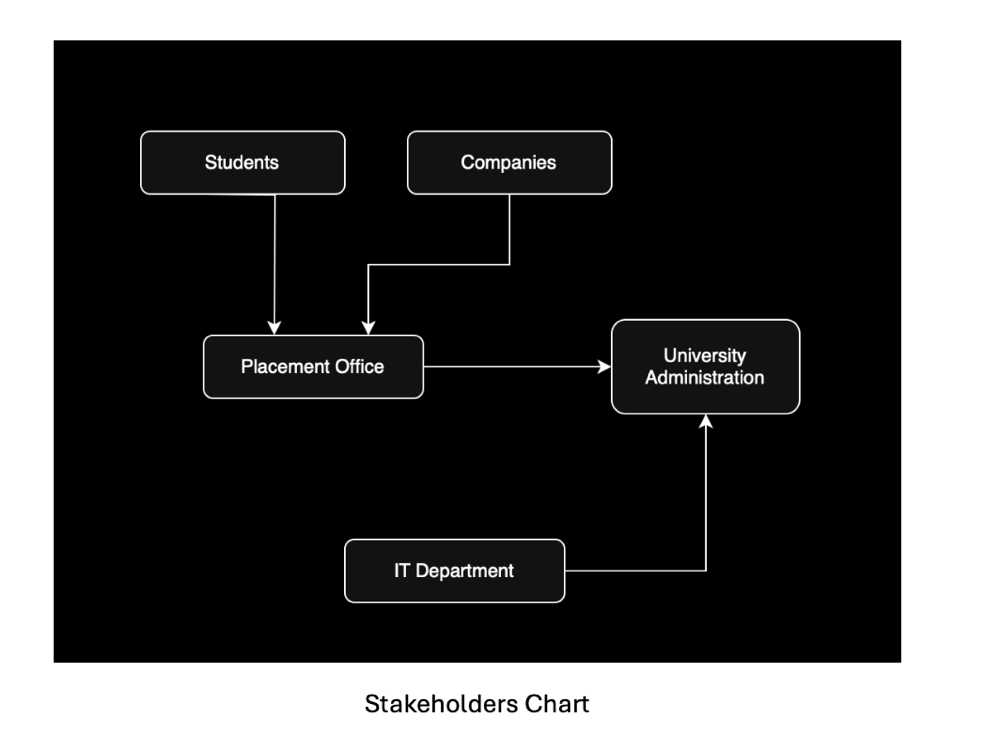
Agile ScrumUse Case SpecificationGDPR ComplianceStakeholder AnalysisER/UML Modeling
Product Owner · Lead for System Requirements & Use Case Specification · Solo · Requirements Engineering (811391A-3020), Univ. of Oulu
A grocery price-comparison concept for the Finnish market, emphasizing price transparency and accessibility. Modeled a 10-entity relational schema (User, Product, Store, Retailer, PriceEntry, FavouriteProduct, PriceAlert, NutritionInfo, ShoppingList, AccessibilityPreference) and a use-case diagram built around accessibility from the ground up — high contrast, text resize, keyboard-only navigation, voice input, and screen reader support as first-class flows, not an afterthought. Sequenced the build as a four-release roadmap grouped by feature type: an MVP baseline, then continuous-development features, performance/security hardening, retailer-facing tools, and customer-experience polish — managed and tracked in Taiga using Agile Scrum.
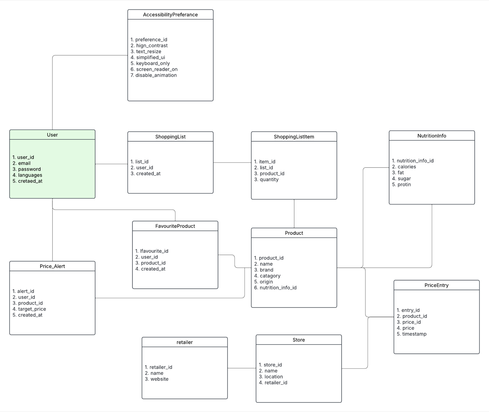
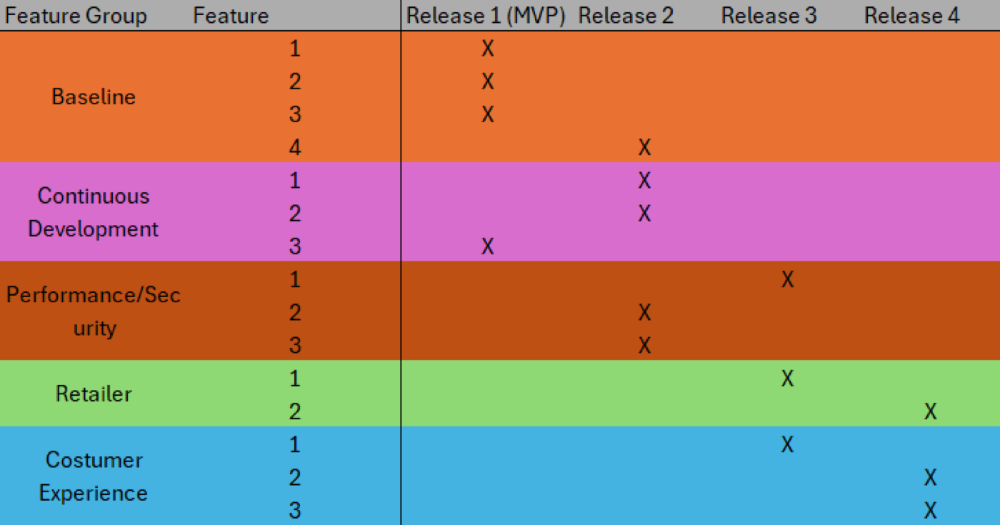
Requirements AnalysisUse Case DevelopmentER/UML ModelingAgile ScrumProduct Roadmapping
Researcher & Author · Solo · ICT and Behaviour Change, Univ. of Oulu
A ~4,500-word literature review (38 sources, APA 7) asking whether GDPR has actually worked as a behaviour-change intervention on European users' platform choices — given that Google, Meta, and Amazon still dominate EU digital markets a half-decade after enforcement. Synthesized findings through the Theory of Planned Behaviour, Persuasive Systems Design, Value-Sensitive Design, and Cognitive Load Theory to argue that GDPR shifted attitudes (privacy awareness is up) but not subjective norms or perceived behavioural control, which still favor the incumbent platforms — so consent flows add cognitive load without producing the deliberate, informed engagement the regulation intended. This review shares its theoretical spine with my Bachelor's thesis, A Comparative Usability Analysis of European and American Digital Platform Design.
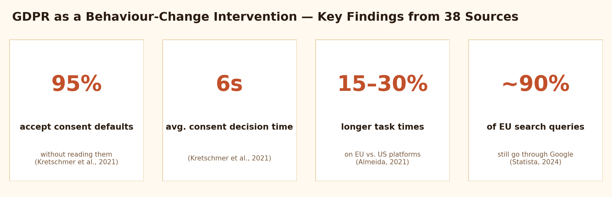
GDPR ComplianceTheory of Planned BehaviourPSD ModelCognitive Load TheoryPolicy Analysis
Information Security · Risk Analysis
Information Security Risk Assessment: Netflix
Analyst & Contributor · Team project · Univ. of Oulu
An OCTAVE Allegro risk assessment of Netflix's information security posture — an asset-driven methodology that identifies critical information assets first, then maps the threats, vulnerabilities, and business impact specific to each one, rather than starting from a generic threat checklist. GDPR compliance considerations (cross-border data transfer, subscriber data handling, breach-notification obligations) were woven through the risk register rather than treated as a separate compliance appendix.
OCTAVE AllegroRisk AssessmentGDPR
Analysis
AIESEC Oulu Website Redesign
Team Lead · Team of 4 · AIESEC Oulu ry
Led the UX analysis and information-architecture work behind a full redesign of the AIESEC Oulu website, coordinated alongside a cross-functional volunteer team and tracked through a dedicated Jira project (AOW) covering scope, sprints, and handoff documentation.
JiraProject ManagementUX Analysis
Analysis
Persuasive Systems Design Case Study — Strava
Analyst · Solo · Persuasive Systems Design, Univ. of Oulu
An evaluation of Strava through the Persuasive System Design model, analyzing how the app's behavioral-psychology mechanics — segments, kudos, streaks, and social comparison — drive engagement, and where those same mechanics risk tipping from motivating into manipulative.
PSD ModelBehavioral PsychologySystem Evaluation
3D Development
Unity Essential WebGL Project
Developer · Solo · Independent project
A WebGL-based 3D project built in Unity, exploring game development fundamentals and real-time rendering — built and shipped as a playable browser build, not just an editor screenshot.
Researcher · Solo · Technology Innovation & Business (811178P-3007), Univ. of Oulu
An academic research paper on the impact of open source and open data adoption on digital transformation in public-sector services, examining governance and policy barriers alongside the technical case for adoption.
Data GovernanceDigital TransformationPolicy Analysis
Research
Baltic Sea Climate Impact Study
Researcher · Solo · Climate Now, Tampere University
Environmental research synthesizing published long-term datasets on Baltic Sea climate impact: near-exponential grey seal population growth across Finnish, Swedish, and Estonian census sites since 1990; a 3.6%/year decline in southern Baltic bacterioplankton biomass between 1988–2007, attributed to improved water management; and a Baltic/North Sea sea-surface warming trend of 0.029°C/year from 1993–2022 (Copernicus Marine Service data), with the northern Baltic projected to warm 2–4°C by 2100 — faster than the global ocean average.
Facilitated educational workshops and community activities for children and young people across multicultural environments in Poland and Portugal.
Engaged local communities, adapting activities based on participant needs and feedback
Supported organizations through social media, visual communications, cultural events, and international exchange activities — including a Bangladeshi Cultural & Photography Exhibition and a community garden build
Taught Bengali language and literature
Nov 2024 — Apr 2025
Restaurant Crew
McDonald's Rovaniemi Lampela · Finland
First role at Finland's busiest McDonald's location.
Jan 2024 — Jul 2024
Student Representative
Sustainable Urban Development Degree Program Committee · Tampere University
Collected student feedback, facilitated dialogue with faculty, and advocated for academic and curriculum improvements.
Jan 2024 — Jul 2024
Corporate Relationship Officer
Urbanum ry · Tampere University
Built partnerships with corporate sponsors and organized professional development events.
![Topcon Pulse-Eye software system architecture diagram: a Point of Care lane (NW500/Maestro2 health workstation) feeding an embedded edge runtime, connected via HTTPS/TLS 1.3/FHIR/DICOM to a Harmony Cloud Services lane containing the multimodal inference pipeline, smart referral matching, operator console, specialist portal, and micro-billing services, writing to an IDHea governance/audit log and a clinical imaging data store, with dotted lines to external Stripe/clearinghouse and third-party AI partner integrations.](assets/topcon-system-architecture.png)